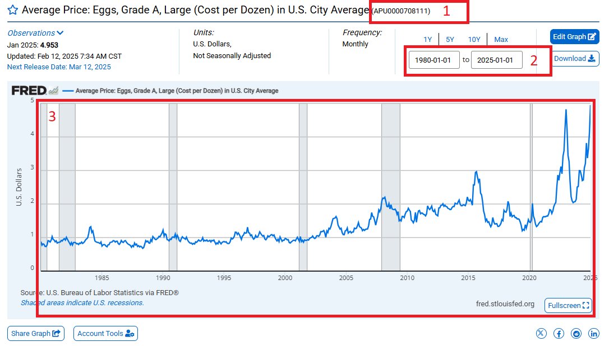

#epoch
as.numeric(as.Date("1970-01-01"))[1] 0#add one day to see how dates are tracked
as.numeric(as.Date("1970-01-02"))[1] 1
This Lab Contributes to Course Objectives: 1, 2, 3, 4, 7, 8
lab_05 under your arec_330 folder.Open a new R script and save it as lab_05_script.R.
Add a description of the script as a comment.
Set your working directory as arec_330/lab_05.
Load (install if necessary) needed packages.
The overall objective of this lab is to acquaint you with time series data.
Time series data is widely used but lacks a standardized format. Importantly, dates and times are not inherently understood by machines—they are stored as numbers relative to a specific starting point (epoch).1
You can confirm this by running:
#epoch
as.numeric(as.Date("1970-01-01"))[1] 0#add one day to see how dates are tracked
as.numeric(as.Date("1970-01-02"))[1] 1Importing time series data is similar to other types of data, but special attention is needed for date formatting.
We will use retail egg price data from the St. Louis FED (FRED).
You can download the data manually or import it directly via read_csv():
#Load necessary libraries
library(readr)Warning: package 'readr' was built under R version 4.4.2library(dplyr)Warning: package 'dplyr' was built under R version 4.4.2
Attaching package: 'dplyr'The following objects are masked from 'package:stats':
filter, lagThe following objects are masked from 'package:base':
intersect, setdiff, setequal, union#Read in the data
egg_raw <- read_csv("https://csu-arec-330.github.io/materials/unit_01/inputs/APU0000708111.csv")Rows: 517 Columns: 2── Column specification ────────────────────────────────────────────────────────
Delimiter: ","
dbl (1): APU0000708111
date (1): DATE
ℹ Use `spec()` to retrieve the full column specification for this data.
ℹ Specify the column types or set `show_col_types = FALSE` to quiet this message.The read_csv() function will try to guess the data type. In this case, it correctly identifies the variable DATE as a date.
Review the data type of the variable directly by looking at the dataframe:
#Confirm that R read in the date field as a date
glimpse(egg_raw)Rows: 517
Columns: 2
$ DATE <date> 1980-01-01, 1980-02-01, 1980-03-01, 1980-04-01, 1980-05…
$ APU0000708111 <dbl> 0.879, 0.774, 0.812, 0.797, 0.737, 0.731, 0.776, 0.907, …Sometimes, date fields are stored as text and need to be converted. In these cases, you need to give R some guidance.
To see this in practice, read in a modified version of the egg prices data.
Assign the dataframe to an object called egg_raw_c to avoid overwriting the existing data:
#Read in the data
egg_raw_c <- read_csv("https://csu-arec-330.github.io/materials/unit_01/inputs/APU0000708111_cdate.csv")Rows: 517 Columns: 2
── Column specification ────────────────────────────────────────────────────────
Delimiter: ","
chr (1): CHAR_DATE
dbl (1): APU0000708111
ℹ Use `spec()` to retrieve the full column specification for this data.
ℹ Specify the column types or set `show_col_types = FALSE` to quiet this message.#Confirm that R read in the date field as text and *not* a date
glimpse(egg_raw_c)Rows: 517
Columns: 2
$ APU0000708111 <dbl> 0.879, 0.774, 0.812, 0.797, 0.737, 0.731, 0.776, 0.907, …
$ CHAR_DATE <chr> "01/01/1980", "02/01/1980", "03/01/1980", "04/01/1980", …Notice that the date is not recognized as a date type variable. You can verify this because CHAR_DATE is listed as chr (1).
Next, we need to tell R how to interpret that date. We will use functions from the tidyverse package, specifically the lubridate library, designed to help work with dates.
# The easiest way to get lubridate is to install the whole tidyverse:
install.packages("tidyverse")
# Alternatively, install just lubridate:
install.packages("lubridate")
#Load the necessary libraries
library(lubridate)
#Use the mutate() function along with the mdy() function to convert the text date to a date value
egg_raw_c <- mutate(egg_raw_c,measure_date=mdy(CHAR_DATE))
#Confirm that you have successfully converted the variable to a date field
glimpse(egg_raw_c)Alternatively, you can chain commands:
#Chaining commands to produce the same data frame
egg_raw_c %>%
mutate(measure_date=mdy(CHAR_DATE)) %>%
glimpse()API stands for Application Programming Interface and they facilitate much of the communication across the modern web.

We use APIs to query data. FRED maintains an API that can be accessed using the library tidyquant. This library also has a large array of finance analysis tools. Right now, we will just use it to access FRED data.
The API we will use retrieves data from the FRED. Specifically, we will retrieve price series data, available here.
Before you begin, explore the FRED website.
Go to https://fred.stlouisfed.org/categories/32455. What do you see?
Select Commodities.
Use the Filter by navigation bar to filter concepts. Select Retail. What changes?
The default list of tables is sorted by popularity. Currently, the average price of eggs is the most popular. Select that table.
Now, let’s deconstruct the image you see.

This is the unique identifier from FRED that is specific to the data series.
This is the date range underlying the data series.
This is the actual data series, not seasonally adjusted.
Now that we are familiar with this layout, let’s use an API to retreive the data and save it as a data frame in R.
Install tidyquant on your machine (e.g., install.packages("tidyquant")) and load the library.
#Install the package if you have not already done so. Comment this out after you have installed it once on your machine.
install.packages("tidyquant")
#Load the library. The library needs to be loaded every time you begin a new instance of R.
library(tidyquant, quietly = TRUE) #Note: The argument quietly = T in the library() function suppresses messages that would normally be printed when loading a package.tq_get()For this exercise, we will use the function tq_get() to access the FRED API.
tq_get() Syntax
The tq_get() function is used to retrieve time series data from sources such as FRED, stock prices, and exchange rates.
data <- tq_get("symbol",
get = "data_source",
from = "YYYY-MM-DD",
to = "YYYY-MM-DD")get \(\rightarrow\) The data source, such as:
from and to \(\rightarrow\) Defines the date range for the retrieved data in YYYY-MM-DD format.data \(\rightarrow\) The resulting dataframe containing the retrieved time series.This function can do many things so we need to be specific with some parameters:
First, we need to find the unique identifier from FRED that points to the data we want. In this case, we are going to grab retail egg prices (the same data that we downloaded earlier). The unique identifier is "APU0000708111". Remember the quotes.
Second, the documentation tells us that to access data from FRED we need to set the get parameter to "economic.data".
Third, we can specify the date range with the from and to parameters. Remember to use the YYYY-MM-DD format.
#Use the tq_get() function to retrieve the time series data
egg_raw_tq <- tq_get("APU0000708111", # This is the symbol for retail egg prices
get = "economic.data", # This is the data source
from="1990-01-01", # This is the start of our time range
to="2024-02-28") # This is the end of our time range
glimpse(egg_raw_tq)tq_get()You can download multiple time series at once by using a vector of identifiers.
Let’s download the producer price index to compare to the retail price of a dozen eggs. The identifier is WPU017107. Note that I am going to overwrite the existing object egg_raw_tq because I am going to download the retail price series as well as the producer price index.
#Use the tq_get() function to retrieve two time series datasets
egg_raw_tq <- tq_get(c("APU0000708111","WPU017107"),
get = "economic.data",
from="1990-01-01",
to="2024-02-28")
glimpse(egg_raw_tq)c() to Retrieve Multiple Series
When retrieving multiple time series, use c() to pass multiple symbols into tq_get(). What this code does is:
c("APU0000708111", "WPU017107") \(\rightarrow\) A vector containing multiple FRED series.Notice that there are 3 columns in egg_raw_tq but we downloaded two time series. Why aren’t there 4 columns?
Answer: The new data is stacked. We can confirm this a few ways:
unique() function to see what values for symbol are in the dataset#Display the unique values of the variable symbol
unique(egg_raw_tq$symbol)table() to see the counts by each value#Count the number of observations associated with each value of symbol
table(egg_raw_tq$symbol)Why does the retail series
APU0000708111have more observations?
case_when() to replacing values based on a criteriaThe time series are currently identified by the variable symbol. These codes are not informative. Let’s replace them with better labels.
We will use the case_when() function in the dplyr package to replace the symbol with a more descriptive name.
#Use the FRED API to retrieve two data series and rename them the series with a more descriptive name
egg_out <- egg_raw_tq %>%
mutate(description=case_when(
symbol == "APU0000708111" ~ "Egg Retail Price", #if symbol equals APU0000708111, then replace value with Egg Retail Price
symbol == "WPU017107" ~ "Egg Producer Price" #if symbol equals WPU017107, then replace value with Egg Producer Price
))write_csv() to write the dataset to a csv file.Now the dataset is ready for export in .csv format so you can import it into Tableau.
#Write the dataset to a csv file
write_csv(egg_prices, "egg_prices.csv")tq_get() as separate data frames:# This is the script for lab 05.
#Load necessary libraries
library(readr)
library(dplyr)
#epoch
as.numeric(as.Date("1970-01-01"))
#add one day to see how dates are tracked
as.numeric(as.Date("1970-01-02"))
#Read in the data
egg_raw <- read_csv("https://csu-arec-330.github.io/materials/unit_01/inputs/APU0000708111.csv")
#Confirm that R read in the date field as a date
glimpse(egg_raw)
#Read in the data
egg_raw_c <- read_csv("https://csu-arec-330.github.io/materials/unit_01/inputs/APU0000708111_cdate.csv")
#Confirm that R read in the date field as text and *not* a date
glimpse(egg_raw_c)
# The easiest way to get lubridate is to install the whole tidyverse:
install.packages("tidyverse")
# Alternatively, install just lubridate:
install.packages("lubridate")
#Load the necessary libraries
library(lubridate)
#Use the mutate() function along with the mdy() function to convert the text date to a date value
egg_raw_c <- mutate(egg_raw_c,measure_date=mdy(CHAR_DATE))
#Confirm that you have successfully converted the variable to a date field
glimpse(egg_raw_c)
egg_raw_c %>%
mutate(measure_date=mdy(CHAR_DATE)) %>%
glimpse()
#Install the package if you have not already done so. Comment this out after you have installed it once on your machine.
install.packages("tidyquant")
#Load the library. The library needs to be loaded every time you begin a new instance of R.
library(tidyquant, quietly = TRUE) #Note: The argument quietly = T in the library() function suppresses messages that would normally be printed when loading a package.
#Use the tq_get() function to retrieve the time series data
egg_raw_tq <- tq_get("APU0000708111",
get = "economic.data",
from="1990-01-01",
to="2024-02-28")
glimpse(egg_raw_tq)
#Use the tq_get() function to retrieve two time series datasets
egg_raw_tq <- tq_get(c("APU0000708111","WPU017107"),
get = "economic.data",
from="1990-01-01",
to="2024-02-28")
glimpse(egg_raw_tq)
#Display the unique values of the variable symbol
unique(egg_raw_tq$symbol)
#Count the number of observations associated with each value of symbol
table(egg_raw_tq$symbol)
#Use the FRED API to retrieve two data series and rename them the series with a more descriptive name
egg_out <- egg_raw_tq %>%
mutate(description=case_when(
symbol == "APU0000708111" ~ "Egg Retail Price", #if symbol equals APU0000708111, then replace value with Egg Retail Price
symbol == "WPU017107" ~ "Egg Producer Price" #if symbol equals WPU017107, then replace value with Egg Producer Price
))
#Write the dataset to a csv file
write_csv(egg_prices, "egg_prices.csv")A key attribute of time series data is that we observe values of variables across time. Effective analysis of time series data in Tableau thus begins with understanding date variables and functions. Next, we want to understand what visualizations are most appropriate for time series analysis. Finally we want to understand how to make these visualizations as effective as possible.
Connect to the folder where you have saved carrot_prices.csv, and the three other commodity price series data.
Date functions are Tableau functions that use a date or a date-time field in some way, whether it’s part of the input to perform the calculation or whether the output is a date-time field. Let’s learn about different date functions, their expressions, and their use in Tableau.
You can explore these functions by going to Create calculated field (drop down menu in the data field pane). You can filter on date functions by choosing Date from the library of functions. This will list only the functions that are classified as Date functions.
You can look through these on your own, but I will highlight a few here.
DATEPART (date_part, date, [start_of_week]) returns part of a given date as a number.
For example, DATEPART (‘month’, #January 23, 2021#) = 1. Note the hashtags
DATENAME (date_part, date, [start_of_week]) is similar to DATEPART, but it returns part of a given date as a string.
For example, DATENAME (‘month’, #January 23, 2021#) = January
DATEADD (date_part, increment, date) returns a date in which the specified increment has been added to the given date.
For example, DATEADD (‘day’, 7, #January 23, 2021#) = January 30, 2021
DATEDIFF (date_part, start_date, end_date, [start_of_week]) returns the difference between the two dates using the specified date part.
For example, DATEDIFF (‘day’, #January 23, 2021#, #February 24, 2021#) = 32 and DATEDIFF (‘month’, #January 23, 2021#, #February 24, 2021#) = 1
DATETRUNC (date_part, date, [start_of_week]) truncates or “rounds down” the given date to the level of the specified date_part. This function returns a new date.
For example, when you truncate a date that is in the middle of the month at the month level, this function returns the first day of the month. So DATETRUNC (‘month’, #January 23, 2021#) returns January 1, 2021.
MIN (expression) returns the earliest date across all records, and MIN (expression 1, expression 2) returns the earlier of the two dates for each record.
For example, MIN ([Order Date]) returns the earliest date in the Order Date field.
MAX (expression) returns the latest date across all records, and MAX (expression 1, expression 2) returns the earlier of the two dates for each record.
For example, MAX ([Order Date]) returns the latest date in the Order Date field.
Here are some handy definitions for date_time arguments:

Create a calculated field named months_ago that determines the number of months between the commodity price data and today.
Create a calculated field named first_date that determines the earliest date in the data.
Create a calculated field named last_date that determines the last date that the carrot price index was less than 135.
Create a new variable called month that only includes the month.
Create a new variable called year that only includes the year.
Create a new date variable called my_date that assigns a new date using your month and year variables and sets the day as 15.
What types of visualizations are most appropriate for time series data?
Line graphs
Bar charts
Dot plots
Others?
Let’s experiment with creating these visualizations for time series:
Create a line graph that shows the value of carrots over time (by month)
Add markers to your line graph
Change your line graph to a bar graph dot chart
Change your bar graph to a dot plot
Change the size, colors, and opacity of the dots in your dot plot (use the Size and Color icons)
Change the markers in your chart from dots to a different shape (use the drop down menu on the Marks card, then use the Shape icons)
Now let’s experiment with changing what data is shown in your chart:
Change your x-axis to annual
Create one line that shows the average value of the commodity each year, one line that shows the maximum value, and one that shows the minimum value. Can you get all three of these lines in a single pane?
Restrict your date ranges so that your visualization only shows the last 20 years of data (use the Filters card)
Now we are going to add a trend line to our visualization. I am sure you are all familiar with trend lines, but do you know how they are created? Let’s start with a linear trend line…
Open a new worksheet and create a line chart showing the monthly values of the commodity from 1990 through 2022.
Add a trend line to your chart.
When you click on the trend line, what information does Tableau give you about it? What does this information mean?
When you click on describe trend model what information does Tableau give you about it?
Change your x-axis to annual. Did your trend line change? How do you know? Why did or didn’t the trend line change when you changed the date aggregation?
Usually, in long time series data, we can see distinct points where trends change. These are called structural breaks. There are ways to test for structural breaks, but for now, let’s visually inspect them.
Looking at your visualization of monthly carrot prices and the linear trend line, does your trend line accurately reflect trends in the data for the entire period from 1990 to 2022?
Identify a month-year where it appears that trends in your data changed.
Add a reference line at this month-year. (Right-click on the x-axis and select Reference Line) Does anything happen to your trend line?
Method 1: Separate Your Time Series by Adding Color
Create a new calculated field named before_after_break. Use the IF and THEN functions and an appropriate Date function to populate this variable with “after” if the date is after the break and “before” if the date is before the break.
Drag this variable to the Color card.
Add trend lines to your visualization. What happens?
Method 2: Separate Your Time Series by Segmenting the X-Axis
Drag your new variable from the Marks card to the Columns shelf.
Sort your variable so that the “after” time period is shown following the “before” time period.
In the x-axis Edit Axis menu, select independent axis ranges for each row or column (right-click on the x-axis to access this menu).
Note: Typically, Tableau automatically adjusts these panes to be the same size, but you can set them to be different sizes based on the windows you have set by toggling back and forth in your date variable aggregation.
Sometimes we might want to view multiple time series in separate figures. We can do this with panes in our visualizations.
Let’s start by bringing in some price data for a few new commodities.
On the Data Source page, connect to the following data sources: corn_prices.csv and tomatoes_prices.csv.
We are going to create a relationship between these data sources and our current working file.
With the carrot data in the canvas, drag one of the other data sources next to it in the canvas. Do the same with the other data source.
Now go to a new worksheet, what do you see? What did we just accomplish?
Now that we have all these data sources in a single file and they are structured in a “wide” format, we are going to construct time series plots that let us compare trends in these commodity prices across time.
Open a new worksheet and create a line plot of the prices over time for each commodity.
Try formatting your figure: change colors, adjust sizes, etc.
Use your before_after_break variable to examine whether all the commodities appear to have a structural break at the time you identified for the first commodity.
Connect to the egg data that we assembled in R.
Create a time series of the price. How many lines are there? What is the default calculation doing?
Differentiate the price series by dragging Description (a dimension) to the color under Marks. You should see two lines but the scales are off. What’s wrong?
Rescale one of the series to match the other. You can go back to R to do this or do it in Tableau. In either case, you will want to use if/then logic.
https://knowledge.broadcom.com/external/article/57052/how-to-convert-unix-epoch-time-values-in.html#:~:text=Epoch%20%2F%20UNIX%20time%20is%20the,on%20the%2070%20years%20difference.↩︎